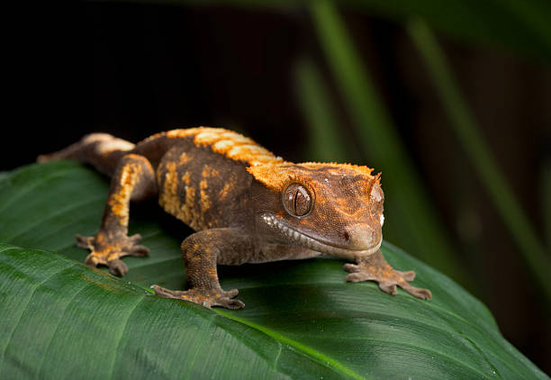
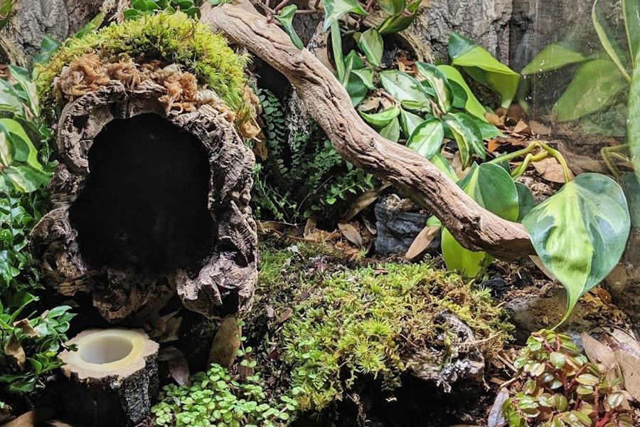
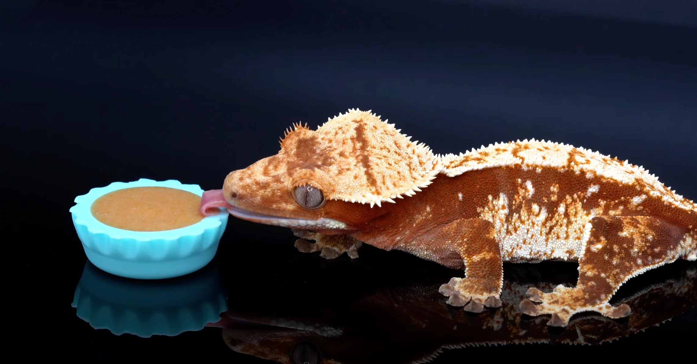
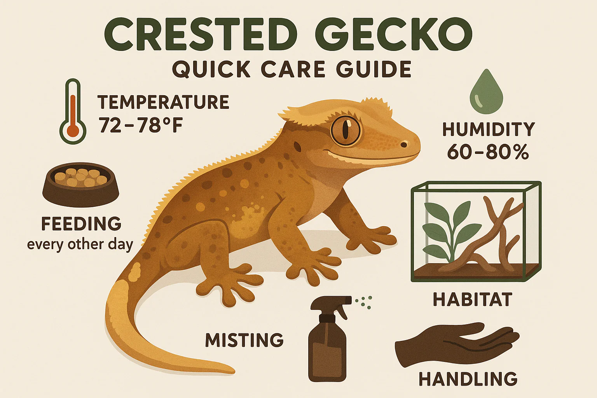

Introduction to Crested Geckos
Crested geckos (Correlophus ciliatus) are arboreal lizards native to the humid rainforests of New Caledonia. Once believed to be extinct until their rediscovery in 1994, they quickly became one of the most popular pet reptiles due to their gentle temperament and low-maintenance care requirements. Cresties do not require complicated heating, can thrive in room-temperature environments, and do not need live insects as a primary food source, making them ideal for both beginners and experienced keepers. They are known for the “eyelash-like” crests above their eyes, sticky toe pads for climbing, and their ability to drop their tail (which does not grow back). With proper care, a crested gecko can live 15–20 years in captivity.
Growth & Development
Crested geckos grow rapidly during their first two years of life. The chart below illustrates typical healthy weight gain for male and female crested geckos over time. Individual growth rates may vary depending on diet, genetics, and husbandry conditions.
Bioactive vs Non-Bioactive Enclosures
A bioactive enclosure is a self-sustaining ecosystem designed to mimic a natural rainforest floor. It typically includes live plants, natural substrate layers (drainage, soil, leaf litter), and a clean-up crew of springtails and isopods that help break down waste and prevent mold. This type of setup provides mental stimulation, higher humidity stability, and a visually appealing display. A non-bioactive enclosure, on the other hand, uses substrates like paper towels, reptile carpet, or coconut fiber that must be cleaned or replaced regularly. These setups require less initial work, allow easier monitoring of waste and hydration levels, and are often recommended for new keepers who want a simple maintenance routine. Both enclosure types are safe and healthy as long as they are kept clean and allow the gecko to hide, climb, and thermoregulate.
Feeding & Nutrition
Crested geckos thrive on a diet centered around a complete powdered food mix known as CGD (Crested Gecko Diet). This diet contains balanced vitamins, minerals, and proteins specifically formulated for their needs, and should be offered 3–4 times per week. Fresh CGD should be mixed with water to a yogurt-like consistency and replaced every 24 hours. While CGD can be the sole diet, many keepers supplement with insects like crickets or dubia roaches once or twice per week. Insects should be appropriately sized (no larger than the space between the gecko’s eyes) and gut-loaded for added nutrition. Always dust insects with a calcium + D3 supplement to prevent metabolic bone disease. Treats like mashed fruit can be offered sparingly but should never replace the main diet.
Humidity, Lighting, and Temperature
Proper environmental conditions are essential for keeping a crested gecko healthy. Humidity should be maintained between 50–70% with nightly misting. Crested geckos are comfortable at typical household temperatures, ideally 72–78°F during the day and slightly cooler at night. Unlike many reptiles, cresties do not require strong UVB lighting, but low-level UVB can improve appetite and bone health. Lighting should follow a natural 12-hour day/night cycle.
Common Health Issues

Crested geckos are hardy animals, but improper care can lead to health issues such as stuck shed, dehydration, metabolic bone disease, and impaction. Maintaining proper humidity, offering a balanced diet, and monitoring weight and behavior are key to preventing these problems. Sudden weight loss, lethargy, or loss of appetite should be addressed by consulting a reptile veterinarian.